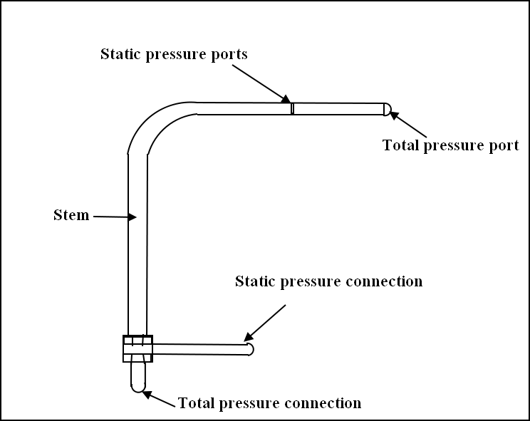
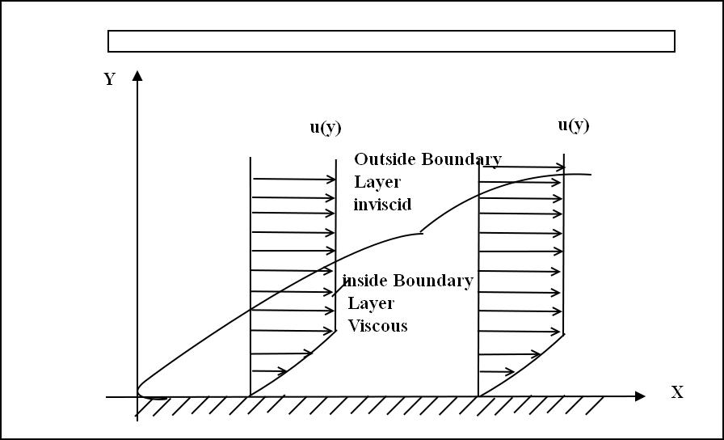
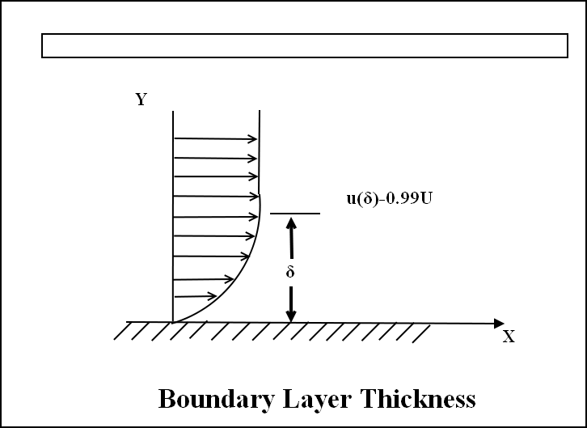
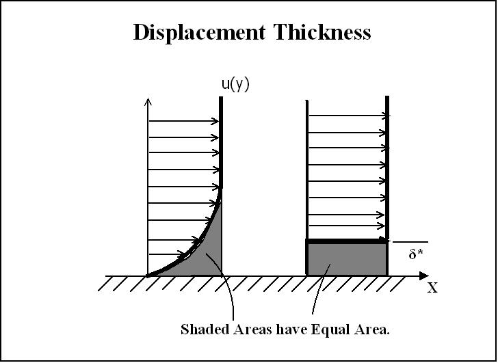

Experimental set-up:
The flow over a flat plate was observed in a subsonic wind tunnel.The base of the wind tunnel was considered to be the flat plate.The velocity profile was measured
at three stations on flat plate for three different free stream velocities.
The measurements were done using a pitot probe.
The velocity measurements were done by measuring the dynamic head or we say by measuring the difference of the stagnation and static pressure.
The free stream velocity was also measured by using a pitot probe atthe entry of the flow in the test section.
A brief description of pressure probe is given below:
Pressure Probe:
A device to measure the stagnation pressure due to isentropic deceleration of a flowing fluid.In its original form it was a tube bent at 900
and inserted in a stream flow,with its opening pointed upstream.The pitot probe is one of the most widely used pressure measurement device.
The accuracy of it depends upon the Mach number,the Reynolds number,the magnitude of transverse shear,turbulence intensity and length scale,the orientation with respect to mean flow direction etc.
The pitot probe is mounted on a three dimensional traverse.
The traverse has six degrees of freedom.Traverse gives a positioning accuracy of +-0.1 mm in all three directions(x,y and z).The probe is connected
to a pressure transducer which is connected to computer which gives the direct values of pressure through LABVIEW application software.
Pitot Static Tube:
The difference between stagnation and static pressure is measured using pitot static tube.There are two separate points to measure the stagnation
and static pressures.The moving fluid is brought to rest(stagnates) as there is no outlet to allow flow to continue.This pressure is the stagnation pressure of the fluid,also
known as the total pressure or(particularly in aviation)the pitot pressure.The static pressure is measured by the openings at 90 degrees to flow direction.

Definition of Boundary Layer
A boundary layer is a thin region of fluid near a wall where viscous effects are important in determining the flow field.
The boundary layer is a buffer region between the wall below and the inviscid free-stream above.
Mathematically,its main purpose is to allow an inviscid flow solution to satisfy the no-slip condition at the wall.

The figure shows a boundary layer.Conventionally,the x-axis is parallel to the wall,while the y-axis is
perpendicular to the wall and cuts right through the boundary layer.At any given x-cordinate,we can draw the velocity distribution as function of y.
This is the most common way to illustrate a boundary layer.
The boundary Layer typically grows in thickness in stream wise direction.Turbulent boundary layers grow faster than laminar ones.
Three main parameters that are used to characterize the size and shape of a boundary layer are the boundary layer thickness,the displacement thickness,and the momentum thickness.
Ratios of these thickness describe the shape of the boundary layer.There are other such thickness,but they are not as common.
The boundary layer thickness,signified by δ,
is simply the thickness of the viscous boundary layer region.
Because the main effect of viscosity is to slow the fluid near a wall,the edge of the viscous region is found at the point
where the fluid velocity is essentially equal to the free-stream velocity.

In a boundary layer,the fluid asymptotically approaches the free-stream velocity as one moves away from the wall,so it never actually equls the free-stream velocity.
Conventionally(and arbitrarily),we define the edge of the boundary layer to be the point at which the fluid velocity equals 99% of the free-stream velocity.
u|y=δ=0.99U
Because the boundary layer thickness is defined in terms of the velocity distribution,it is sometimes
called the velocity thickness or the velocity boundary layer thickness.
There is no general equations for boundary layer thickness.Specific equation exist for certain types pof boundary layer.For a Blasius
(flat-plate,incompressible,laminar) boundary layer,the boundary layer thickness is given by
δ/x=4.910/&sqrt;Rex
where x is the distance from the leading edge of the plate(Emanuel,230).
The displacement thickness,symbolized by δ*,is the distance a streamline just outside the boundary
layer is displaced away from the wall compared to the inviscid solution for flow outside the boundary layer as the boundary
layer equations yield.
Still another way to describe displacement thickness in Figure.The displacement thickness is the distance that,when multiplied by the free-stream velocity,equals the integral defect,U-u,across the boundary that is,

Uδ*=
solving for,
δ*
The displacement thickness is important in interactive boundary layer solutions.After employing the boundary layer equations to calculate the displacement thickness along the wall,
a virtual wall is created by displacing the wall outward by the displacement thickness.a ne inviscid solution is computed using this virtual wall.This yields slightly different free-stream
conditions than the initial calculation.The boundary layer solution is then recalculated,using the new free-stream conditions,for the real wall.The
process is repeated until the displacement thickness stops moving with each iteration.
The momentum thickness,symbolized by θ,is the distance that,when multiplied by the square of the free-stream velocity,equals the integral
of the momentum defect,
The momentum thickness is somewhat harder to visualize than the displacement thickness.One can visualize it using the given figure,except that specific momentum flux distribution u(y)2
replaces the velocity distribution.The total skin friction drag per unit depth on the surface.The total skin friction drag per unit depth on the surface is given by
PU2θ,evaluated at the trailing edge.
|